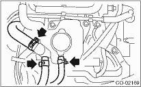
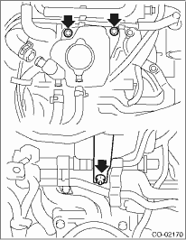

NOTE:
The coolant filler tank is found in turbo models only.
WARNING:
The radiator is pressurized. Wait until engine cools down before working on the radiator.
1. Remove the collector cover.
2. Drain approximately 3.0 L (3.2 US qt, 2.6 Imp qt) of engine coolant. 
3. Remove the air cleaner upper cover and the air intake duct.
4. Remove the air cleaner element.
5. Disconnect the engine coolant hoses from coolant filler tank.

6. Remove the bolts and nut which install coolant filler tank.
7. Disconnect the engine coolant hose which connects the under side of coolant filler tank.
8. Remove the coolant filler tank.
